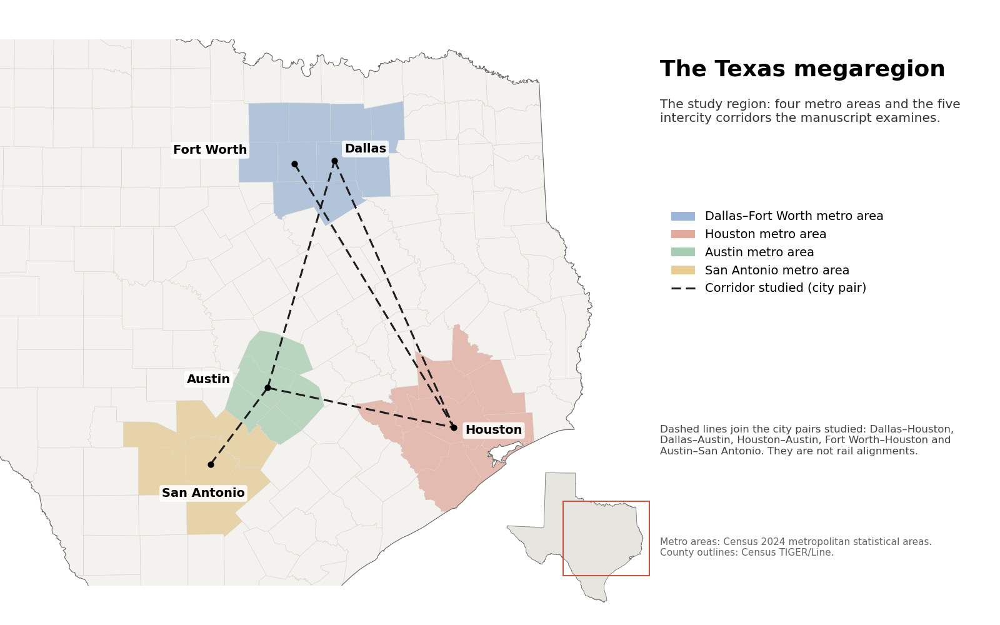

High-Speed Rail and Robotaxis for the Texas Megaregion
What if a Texas high-speed rail line were paired with electric robotaxis to carry travelers from door to door?
- Manuscript in revision
- 2026–present
- High-speed rail
- Autonomous vehicles
- Intercity travel
- Decarbonization

In plain English
Dallas–Fort Worth, Houston, Austin and San Antonio form one of the fastest-growing megaregions in the country, and most trips between them are made by car or short flight. High-speed rail could be faster and cleaner, but a train only helps if people can get to and from its stations. This project asks what would happen if a Texas high-speed rail system were paired with electric robotaxis, meaning shared self-driving cars, for the first and last miles.
The team built a scenario model of five intercity corridors that follows the whole trip: the ride to the station, the train, and the final leg. It compares travel time and cost with driving and flying, and estimates ridership, electricity use and emissions. It also looks for thresholds, such as how many riders it takes to pay back the carbon of construction or for fares to cover costs. The manuscript is in revision for Transportation Research Part D and builds on the lab's 2019 study of shared autonomous vehicles.
Main points
- Models five corridors linking Dallas, Fort Worth, Houston, Austin and San Antonio as one rail-plus-robotaxi network.
- Counts the full door-to-door trip, including airport processing and station access, not just time on the train.
- Grounds its scenarios in public travel, airline and Census data rather than assuming a single forecast.
- Reports the conditions a project must meet, such as riders needed for carbon payback and for fares to cover costs.
- Extends the lab's integrated energy and transportation modeling from its 2019 Austin study of shared autonomous vehicles.
Interactive demoDecarbonizing travel →
Papers
Shared self-driving cars could cut both costs and emissions
Jones, E.C., Jr., & Leibowicz, B.D. (2019). Contributions of shared autonomous vehicles to climate change mitigation. Transportation Research Part D: Transport and Environment, 72, 279–298. https://doi.org/10.1016/j.trd.2019.05.005
Would shared self-driving cars help or hurt the climate? In a model of Austin, they lowered costs and emissions even if travel doubled.
- An Austin system in which shared autonomous vehicles take over about 70% of private travel by 2050 is cheaper and emits less CO₂ than one with only private cars, with or without a carbon tax.
- Those benefits hold even if shared vehicles cause double the vehicle miles of the private cars they replace.
- Shared fleets electrify fast: battery-electric cars make up more than half of the shared fleet by 2030 in every scenario examined, and all of it from 2030 when charging can be scheduled freely.
- Letting fleets charge during the day, when solar power is available, instead of only at night, cuts the system's net present cost by about 3.5% ($2.7 billion without the carbon tax, $2.8 billion with it).
![Two-panel chart. Left: from 2020 to 2050 the number of vehicles needed in Austin rises from about 850,000 to about 1.08 million with private cars only, but falls to about 430,000 when a shared autonomous fleet carries most travel. Right: cumulative CO2 from electricity and vehicles over 2015 to 2050 is lower in every shared-vehicle scenario than with private cars only, both without a carbon tax (about 415 to 427 versus 443 million tonnes) and with one (about 164 to 170 versus 196 million tonnes).](img/paper-shared-autonomous-vehicles-2019.png)
- PaperRead the paper (Transportation Research Part D, 2019)
- Codesear-labs/sav-osemosys-trd-2019: the Austin model, all ten published scenarios, and a Python version
- CodeArchived code release for citation (Zenodo DOI 10.5281/zenodo.22715620): sav-osemosys-trd-2019
- RelatedIPCC AR6 Working Group III, Chapter 5 (cites this paper)
Code and materials
People
- Erick C. Jones Jr., PhD, PEPrincipal Investigator · SEAR Lab directorin
- Hritik PatilStudent researcher; manuscript author
- Benjamin D. LeibowiczAuthor, Transportation Research Part D: Transport and Environment 2019
Profiles marked in link to LinkedIn. More past and present lab members are on the SEAR Lab team page.